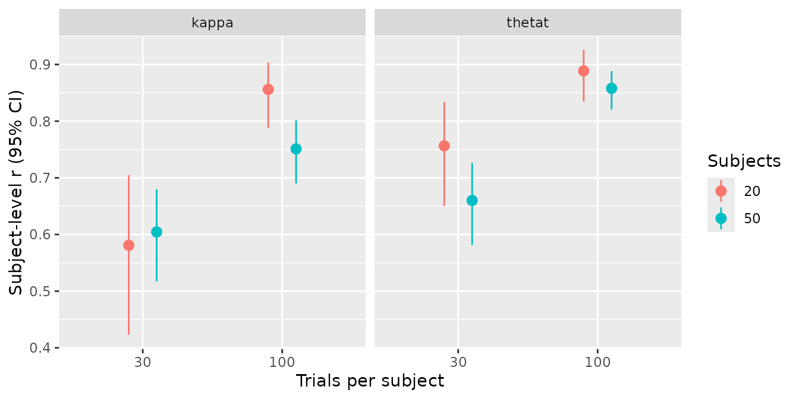
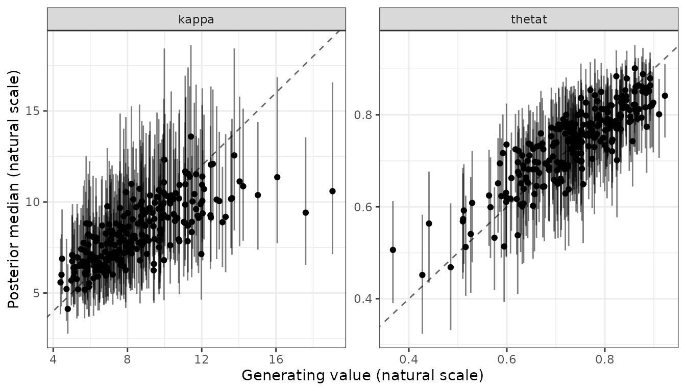

A recovery study repeats the loop of Validating a new bmm model, simulate, fit and
score, over a design: several numbers of subjects and trials, several
replications of each. recovery_grid() runs that loop and
takes care of what makes long simulations fragile: every cell is saved
as soon as it finishes, an interrupted run resumes from those files, and
a short preflight fit catches a broken model before hours are spent on
it.
The example below is the grid behind recovery_mixture2p,
the recovery object that ships with the package. Its results are used
live on this page. The run took 8 minutes 58 seconds, compilation and
preflight included.
The call
library(bmmtools)
recovery_mixture2p <- recovery_grid(
bmm::mixture2p(resp_error = "y"),
grid = expand.grid(n_subjects = c(20, 50), n_trials = c(30, 100)),
pars = c(kappa = log(8), thetat = qlogis(0.75)),
sds = c(kappa = 0.3, thetat = 0.5),
dir = "data-raw/fits/recovery", reps = 5, seed = 2026,
chains = 4, iter = 1000, cores = 4, backend = "cmdstanr",
refresh = 0, silent = 2
)Everything after seed is passed to
fit_cached() and from there to bmm::bmm().
The design grid
grid is a data frame with one row per condition. It
needs the columns n_subjects and n_trials; any
other column named after a parameter sets that parameter’s population
value for the row, and a column sd_<parameter> sets
its between-subject SD. Both override pars and
sds, which act as the defaults for every row:
grid <- expand.grid(
n_subjects = c(20, 50),
n_trials = c(30, 100),
kappa = log(c(4, 16))
)A design created with SimDesign::createDesign() is a
data frame and can be passed as it is. model can also be a
function of one grid row that returns a model, for designs where the
model’s arguments change between rows; the link table must stay the same
across rows, because one table scores every cell.
Smoke run and preflight
Before the full grid, run it with smoke = TRUE. This
fits the first two rows with two replications into
<dir>/smoke, so a smoke run never overwrites or gets
mistaken for a full one.
By default, the grid also runs a preflight: before
any cell, the first cell is fitted once with one chain and 200
iterations into <dir>/preflight. A compile error, an
init failure or data the model rejects stop the grid there, with nothing
else run. The preflight is skipped when the first cell already has a
cached fit.
Files on disk and resuming
Each cell writes two files as soon as it is done, named after its grid row and replication:
-
cell-<row>-rep-<rep>-sim.rdsholds the simulated data and truth; -
cell-<row>-rep-<rep>.rdsholds the fit, with its cache key incell-<row>-rep-<rep>.key.
To resume after an interruption, run the same call again. A cell
whose simulation file exists reads it instead of simulating, and a cell
whose fit matches its key reuses the fit, so finished cells cost only
the time to read them. Rerunning the script that builds the example
objects, with all 20 grid fits on disk, took 23 seconds, including two
prior-only fits that were not cached yet. If an argument that enters the
key changes, say iter, every affected cell is refitted and
the message names the component that changed.
Cells run in replication-major order: every row of replication 1, then every row of replication 2, and so on. If a run is stopped early, the finished cells already span the whole design.
Seeds and simulated people
seed is a master seed. Each cell derives its own seed
from it, its row and its replication, so any single cell can be
reproduced without running the ones before it.
subjects = "redraw", the default, draws new subject
values in every replication. subjects = "fixed" draws them
once per row, in the first replication, and reuses them in every later
one, so the replications become repeated simulations of the same
people.
When a cell fails
A cell whose fit throws an error is recorded with
status = "error", the grid goes on, and a warning at the
end lists the failed cells with the first error message. A cell whose
data cannot be generated stops the grid instead, since that is an error
in the design rather than in the sampler.
Two estimators in one grid
ml = TRUE fits every cell a second time subject by
subject with no pooling, on the same simulated data, and scores both
estimators against the same truth at the subject level, so
summary() returns a row per estimator.
ml = list(...) passes arguments to fit_ml(),
and ml = list(method = "optim") runs the second fit without
a compiler. The per-cell record is attr(x, "ml_cells"), and
a cell whose ML fit fails keeps its hierarchical rows. Hierarchical estimation against
subject-wise maximum likelihood works through the comparison and
what its columns mean.
The result
The grid returns a single bmmtools_recovery object with
population and subject rows for every cell. The condition
column names the grid row:
recovery_mixture2p
#> <bmmtools_recovery>
#> Scored on the natural scale.
#> 5 fits, 2 parameters: kappa, thetat.
#> Levels: population, subject.
#>
#> # A tibble: 16 × 13
#> condition term level scale n bias rmse coverage coverage_50 r
#> <chr> <chr> <chr> <chr> <dbl> <dbl> <dbl> <dbl> <dbl> <dbl>
#> 1 row-1 kappa population natural 5 0.427 1.45 0.8 0.2 NA
#> 2 row-1 thetat population natural 5 0.0349 0.0678 0.8 0 NA
#> 3 row-2 kappa population natural 5 0.656 0.671 1 0.2 NA
#> 4 row-2 thetat population natural 5 -0.000662 0.00505 1 1 NA
#> 5 row-3 kappa population natural 5 0.125 0.512 1 0.6 NA
#> 6 row-3 thetat population natural 5 -0.00646 0.0240 1 0.6 NA
#> 7 row-4 kappa population natural 5 0.121 0.225 1 0.8 NA
#> 8 row-4 thetat population natural 5 -0.00299 0.00909 1 0.8 NA
#> 9 row-1 kappa subject natural 20 -0.275 2.38 0.87 0.37 0.581
#> 10 row-1 thetat subject natural 20 0.0210 0.0869 0.92 0.45 0.757
#> 11 row-2 kappa subject natural 50 0.0974 2.39 0.924 0.396 0.605
#> 12 row-2 thetat subject natural 50 0.00457 0.0712 0.92 0.48 0.660
#> 13 row-3 kappa subject natural 20 -0.144 1.58 0.96 0.52 0.856
#> 14 row-3 thetat subject natural 20 0.00453 0.0500 0.97 0.52 0.889
#> 15 row-4 kappa subject natural 50 -0.259 1.69 0.932 0.5 0.751
#> 16 row-4 thetat subject natural 50 0.00164 0.0502 0.948 0.476 0.858
#> ccc calibration_slope calibration_intercept
#> <dbl> <dbl> <dbl>
#> 1 NA NA NA
#> 2 NA NA NA
#> 3 NA NA NA
#> 4 NA NA NA
#> 5 NA NA NA
#> 6 NA NA NA
#> 7 NA NA NA
#> 8 NA NA NA
#> 9 0.0508 1.77 -6.84
#> 10 0.587 0.825 0.0675
#> 11 0.255 1.59 -8.26
#> 12 0.453 0.982 -0.0393
#> 13 0.799 1.11 -1.08
#> 14 0.854 1.05 -0.0501
#> 15 0.676 1.11 -0.699
#> 16 0.825 1.05 -0.0443
#> # 17 more columns; `tibble::as_tibble()` prints them all.
#>
#> r, rank_r and ccc are NA where they are not estimable: they need at least 3 complete pairs and spread on both sides.summary() groups by condition. Population-level
correlations are NA here because every replication of a row
uses the same population values, so the truth has no spread within a
condition; bias, RMSE and coverage are still defined.
The attribute cells has one row per cell, with its seed,
file, status, runtime in seconds and convergence verdict:
cells <- attr(recovery_mixture2p, "cells")
cells
#> # A tibble: 20 × 20
#> condition replication n_subjects n_trials seed file status elapsed converged max_rhat
#> <chr> <int> <int> <int> <dbl> <chr> <chr> <dbl> <lgl> <dbl>
#> 1 row-1 1 20 30 9946 data… ok 1.91 TRUE 1.01
#> 2 row-2 1 50 30 17865 data… ok 2.12 TRUE 1.01
#> 3 row-3 1 20 100 25784 data… ok 1.20 TRUE 1.01
#> 4 row-4 1 50 100 33703 data… ok 1.33 TRUE 1.01
#> 5 row-1 2 20 30 9947 data… ok 0.629 FALSE 1.01
#> 6 row-2 2 50 30 17866 data… ok 1.30 TRUE 1.01
#> 7 row-3 2 20 100 25785 data… ok 0.957 TRUE 1.01
#> 8 row-4 2 50 100 33704 data… ok 1.36 TRUE 1.01
#> 9 row-1 3 20 30 9948 data… ok 0.671 TRUE 1.01
#> 10 row-2 3 50 30 17867 data… ok 1.66 FALSE 1.01
#> 11 row-3 3 20 100 25786 data… ok 0.699 TRUE 1.01
#> 12 row-4 3 50 100 33705 data… ok 1.66 FALSE 1.02
#> 13 row-1 4 20 30 9949 data… ok 0.658 FALSE 1.01
#> 14 row-2 4 50 30 17868 data… ok 1.36 TRUE 1.01
#> 15 row-3 4 20 100 25787 data… ok 1.32 TRUE 1.01
#> 16 row-4 4 50 100 33706 data… ok 1.30 FALSE 1.01
#> 17 row-1 5 20 30 9950 data… ok 0.937 TRUE 1.01
#> 18 row-2 5 50 30 17869 data… ok 1.65 TRUE 1.01
#> 19 row-3 5 20 100 25788 data… ok 0.921 TRUE 1.01
#> 20 row-4 5 50 100 33707 data… ok 1.36 TRUE 1.01
#> # ℹ 10 more variables: min_ess_bulk <dbl>, min_ess_tail <dbl>, n_divergent <int>,
#> # n_max_treedepth <int>, n_variables <int>, failed <chr>, fit_seconds <dbl>,
#> # chains <int>, iter <int>, threads <int>To read the summary against the design, join the design columns from
cells:
design <- unique(cells[c("condition", "n_subjects", "n_trials")])
subject_summary <- summary(recovery_mixture2p) |>
dplyr::filter(level == "subject") |>
dplyr::left_join(design, by = "condition")
subject_summary[c(
"term", "n_subjects", "n_trials", "n_converged",
"bias", "rmse", "coverage", "r", "r_low", "r_high"
)]
#> # A tibble: 8 × 5
#> term bias rmse coverage r
#> <chr> <dbl> <dbl> <dbl> <dbl>
#> 1 kappa -0.275 2.38 0.87 0.581
#> 2 thetat 0.0210 0.0869 0.92 0.757
#> 3 kappa 0.0974 2.39 0.924 0.605
#> 4 thetat 0.00457 0.0712 0.92 0.660
#> 5 kappa -0.144 1.58 0.96 0.856
#> 6 thetat 0.00453 0.0500 0.97 0.889
#> 7 kappa -0.259 1.69 0.932 0.751
#> 8 thetat 0.00164 0.0502 0.948 0.858
#> # 5 more columns; `tibble::as_tibble()` prints them all.
library(ggplot2)
ggplot(
subject_summary,
aes(factor(n_trials), r,
ymin = r_low, ymax = r_high,
colour = factor(n_subjects)
)
) +
geom_pointrange(position = position_dodge(width = 0.4)) +
facet_wrap(~term) +
labs(
x = "Trials per subject", y = "Subject-level r (95% CI)",
colour = "Subjects"
)
Because the object keeps its class through dplyr verbs, a single cell can be plotted directly:
recovery_mixture2p |>
dplyr::filter(condition == "row-4", level == "subject") |>
plot_recovery()
elapsed is the time a cell took in the run that returned
the object, in seconds, so the fitting time of the grid in minutes
is:
sum(cells$elapsed) / 60
#> [1] 0.4166799After a resume, a cell whose fit was read from disk records the time it took to read it, not the time it once took to fit.
One grid, every estimand
A study usually needs more than one kind of number from the same
data: the population value of each parameter, an experimental effect,
how much people differ, whether those differences go together, and each
person’s own values. recovery_grid() scores all of them
from one fit per cell. The result is then split back into one table per
estimand family, because a summary that pools subject values with
population effects answers no single question.
The example is mixture2p with two tasks. The second task
lowers both precision and the probability of recall. People vary around
the task values, and a person who is precise in one task tends to be
precise in the other:
library(bmmtools)
model <- bmm::mixture2p(resp_error = "y")
tasks <- c("1", "2")
# cell values on the link scale: task 2 lowers precision and memory
pars <- c(
kappa_task1 = log(8), kappa_task2 = log(4),
thetat_task1 = qlogis(0.8), thetat_task2 = qlogis(0.6)
)
sds <- c(
kappa_task1 = 0.3, kappa_task2 = 0.3,
thetat_task1 = 0.5, thetat_task2 = 0.5
)
# a person precise in one task is precise in the other
cors <- diag(4)
dimnames(cors) <- rep(list(names(pars)), 2)
cors["kappa_task1", "kappa_task2"] <- 0.7
cors["kappa_task2", "kappa_task1"] <- 0.7
cors["thetat_task1", "thetat_task2"] <- 0.7
cors["thetat_task2", "thetat_task1"] <- 0.7coding = "contrast" fits an intercept and a task effect
for each parameter instead of one value per task, and
re_cor = "all" lets every subject deviation correlate with
every other. Asking for the "effect" and "sd"
levels and for correlations adds those families to the
population and subject rows. Two cells, 40 and 100 subjects with 100
trials per task, ten replications each:
out <- recovery_grid(
model,
grid = data.frame(n_subjects = c(40, 100), n_trials = 100),
pars = pars,
dir = file.path(fits_dir, "recovery-grid-combined"),
reps = 10,
sds = sds, cors = cors, tasks = tasks,
coding = "contrast", re_cor = "all",
levels = c("population", "effect", "sd", "subject"),
correlations = "model",
seed = 2028,
chains = 4, iter = 4000, warmup = 1000, cores = 4,
threads = brms::threading(3),
backend = "cmdstanr", refresh = 0, silent = 2
)The data are generated per task. What the fit estimates is the
intercept (task 1, under the default treatment contrasts) and the
difference to task 2, so the grid transforms the generating values into
the truth for each of those terms. The two correlations of .7 between
tasks become a true SD of the kappa effect of 0.232 and a
true correlation of -0.387 between a person’s kappa
intercept and their kappa effect; the correlations across
parameters are 0.
Convergence. The fits ran with bmm 1.3.2.9000, brms 2.23.0 and CmdStan 2.40.0, 4 chains of 4000 iterations with 1000 of them warmup, and took 191 minutes of sampling. All 20 of 20 cells converged: the largest Rhat of any fit was 1.007, the smallest bulk ESS 432 and the smallest tail ESS 643. One fit had 1 divergent transition out of 12000. An earlier run with 1000 iterations missed the convergence rule in most cells; in its worst fit the slowest variables were the correlations of the task effects, the terms a design like this is least informative about.
The families
summary() of the whole result has one row per cell,
level and term. Splitting it by level gives one table per
family:
families <- split(summary(out), ~level)
names(families)
correlations <- summary(attr(out, "correlations"))
names(families)
#> [1] "effect" "population" "sd" "subject"Ten replications per cell set how finely the numbers below can be read: a coverage over ten intervals moves in steps of .1, so .9 and 1 are both consistent with a nominal 95 % interval, and a calibration slope from ten replications shows a direction rather than a size (see Hierarchical estimation against subject-wise maximum likelihood).
Effects are scored on the link scale, the scale the contrast is estimated on:
tibble::as_tibble(families$effect[c(
"condition", "term", "bias", "rmse", "coverage", "coverage_50",
"ci_width", "sign_recovery"
)])
#> # A tibble: 4 × 8
#> condition term bias rmse coverage coverage_50 ci_width sign_recovery
#> <chr> <chr> <dbl> <dbl> <dbl> <dbl> <dbl> <dbl>
#> 1 row-1 kappa_task1 0.0163 0.0494 1 0.7 0.305 1
#> 2 row-1 thetat_task1 0.0338 0.0796 1 0.7 0.396 1
#> 3 row-2 kappa_task1 -0.00356 0.0333 1 0.7 0.180 1
#> 4 row-2 thetat_task1 0.0226 0.0449 1 0.7 0.256 1The sign of both effects was recovered in every replication. The 95 %
intervals of the kappa effect narrow from 0.31 with 40
subjects to 0.18 with 100.
Population values are the intercepts, on the natural
scale. Every replication of a cell shares them, so there is no spread in
the truth and the correlation columns are NA, as in the
grid above:
tibble::as_tibble(families$population[c(
"condition", "term", "bias", "rmse", "coverage", "coverage_50"
)])
#> # A tibble: 4 × 6
#> condition term bias rmse coverage coverage_50
#> <chr> <chr> <dbl> <dbl> <dbl> <dbl>
#> 1 row-1 kappa -0.0509 0.608 0.9 0.1
#> 2 row-1 thetat -0.0119 0.0198 0.8 0.3
#> 3 row-2 kappa 0.00481 0.344 1 0.2
#> 4 row-2 thetat -0.00235 0.00658 1 0.8Between-subject SDs, on the link scale:
tibble::as_tibble(families$sd[c(
"condition", "term", "bias", "rmse", "coverage", "coverage_50",
"ci_width"
)])
#> # A tibble: 8 × 7
#> condition term bias rmse coverage coverage_50 ci_width
#> <chr> <chr> <dbl> <dbl> <dbl> <dbl> <dbl>
#> 1 row-1 kappa -0.0131 0.0728 0.9 0.5 0.205
#> 2 row-1 kappa_task1 -0.00181 0.111 0.9 0.4 0.370
#> 3 row-1 thetat -0.0685 0.152 0.8 0.3 0.329
#> 4 row-1 thetat_task1 -0.0413 0.125 1 0.5 0.486
#> 5 row-2 kappa -0.00410 0.0322 1 0.3 0.123
#> 6 row-2 kappa_task1 -0.0342 0.0799 0.9 0.3 0.261
#> 7 row-2 thetat 0.00103 0.0456 1 0.5 0.210
#> 8 row-2 thetat_task1 -0.00442 0.0715 0.9 0.6 0.309Subject values are summarised within each
replication and then combined, so here r, ccc
and the calibration line are defined:
tibble::as_tibble(families$subject[c(
"condition", "term", "rmse", "coverage", "r", "calibration_slope",
"calibration_intercept"
)])
#> # A tibble: 8 × 7
#> condition term rmse coverage r calibration_slope calibration_intercept
#> <chr> <chr> <dbl> <dbl> <dbl> <dbl> <dbl>
#> 1 row-1 kappa 1.43 0.942 0.833 1.11 -0.963
#> 2 row-1 kappa_task1 0.112 0.932 0.555 1.45 -0.428
#> 3 row-1 thetat 0.0468 0.892 0.822 1.24 -0.341
#> 4 row-1 thetat_task1 0.0651 0.915 0.625 1.40 -0.191
#> 5 row-2 kappa 1.46 0.94 0.826 1.00 0.0269
#> 6 row-2 kappa_task1 0.108 0.895 0.475 1.37 -0.262
#> 7 row-2 thetat 0.0421 0.942 0.861 1.01 -0.0152
#> 8 row-2 thetat_task1 0.0620 0.937 0.628 1.05 -0.0210People are ordered better on their task-1 values than on how much
they change between tasks: with 100 subjects, r is 0.83 for
the kappa intercept and 0.47 for the kappa
effect, whose true SD is smaller. The calibration slope of the
kappa effect is above 1 in both cells (1.45 and 1.37), so
its subject estimates are shrunk more than the data warrant. With ten
replications that is the direction, not its size.
Correlations come as their own recovery object,
attr(out, "correlations"), with its own summary:
tibble::as_tibble(combined$correlations[c(
"condition", "term", "true_value", "mean_estimate", "bias",
"coverage"
)])
#> # A tibble: 12 × 6
#> condition term true_value mean_estimate bias coverage
#> <chr> <chr> <dbl> <dbl> <dbl> <dbl>
#> 1 row-1 kappa__kappa_task1 -0.387 -0.153 0.234 0.9
#> 2 row-1 kappa__thetat 0 0.0367 0.0367 1
#> 3 row-1 kappa__thetat_task1 0 -0.0256 -0.0256 1
#> 4 row-1 kappa_task1__thetat 0 -0.0568 -0.0568 1
#> 5 row-1 kappa_task1__thetat_task1 0 -0.0605 -0.0605 1
#> 6 row-1 thetat__thetat_task1 -0.387 -0.199 0.188 1
#> 7 row-2 kappa__kappa_task1 -0.387 -0.214 0.173 0.9
#> 8 row-2 kappa__thetat 0 0.00538 0.00538 0.9
#> 9 row-2 kappa__thetat_task1 0 0.00828 0.00828 1
#> 10 row-2 kappa_task1__thetat 0 0.0283 0.0283 1
#> 11 row-2 kappa_task1__thetat_task1 0 -0.0848 -0.0848 1
#> 12 row-2 thetat__thetat_task1 -0.387 -0.313 0.0742 0.9The correlations that are 0 in the truth stay near 0. The one between
a person’s kappa intercept and kappa effect,
truly -0.39, is estimated at -0.15 on average with 40 subjects and -0.21
with 100: pulled towards 0, less so with more people. Recovering between-subject
correlations looks at that attenuation in detail.